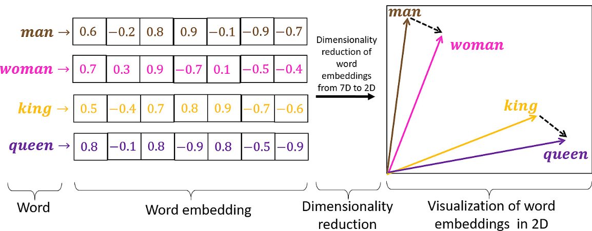
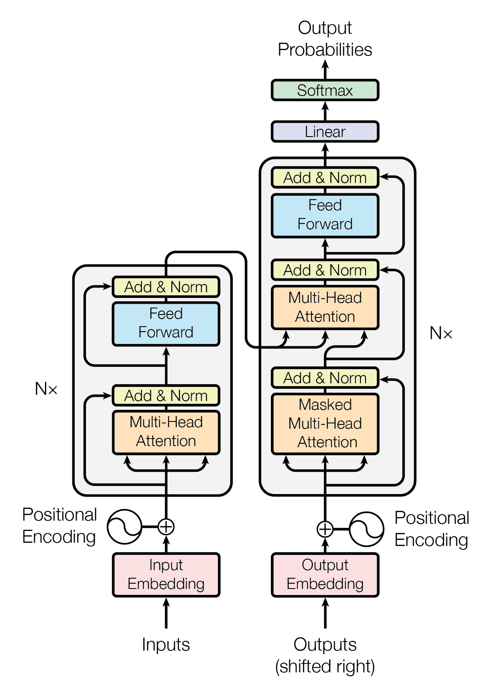
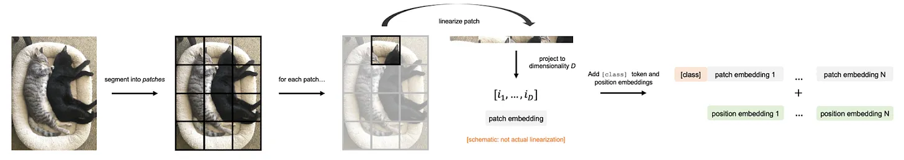
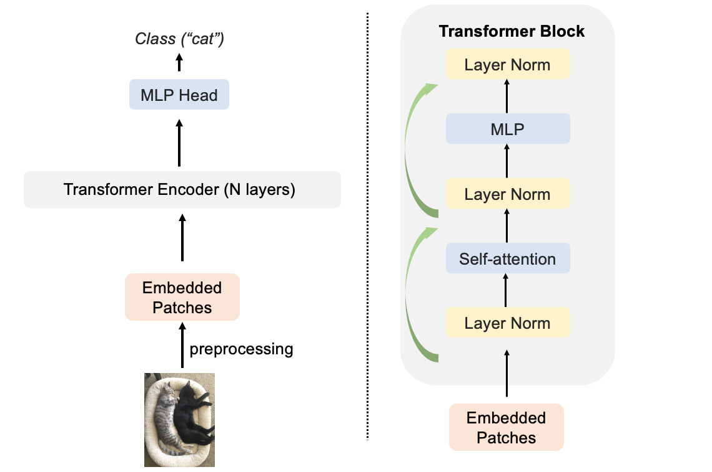
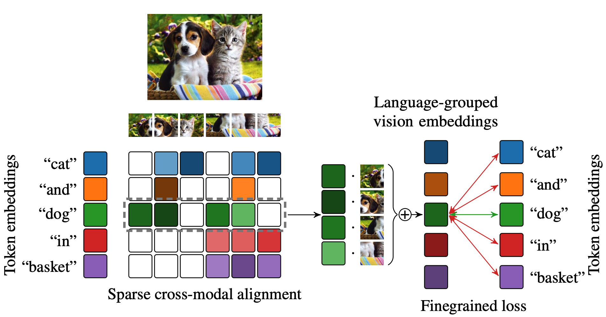
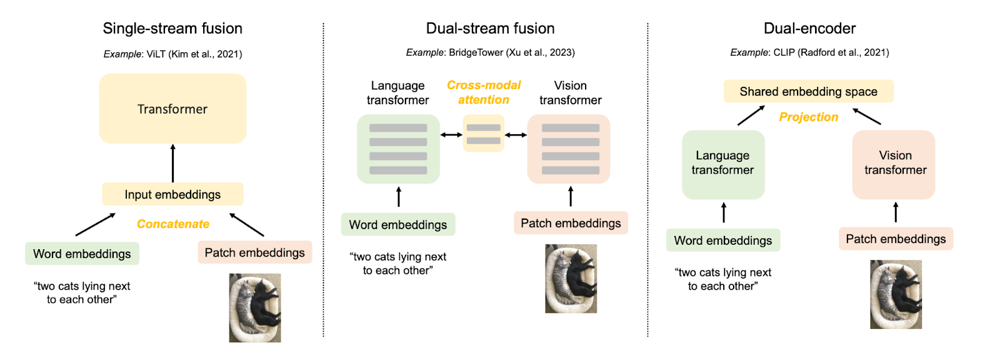
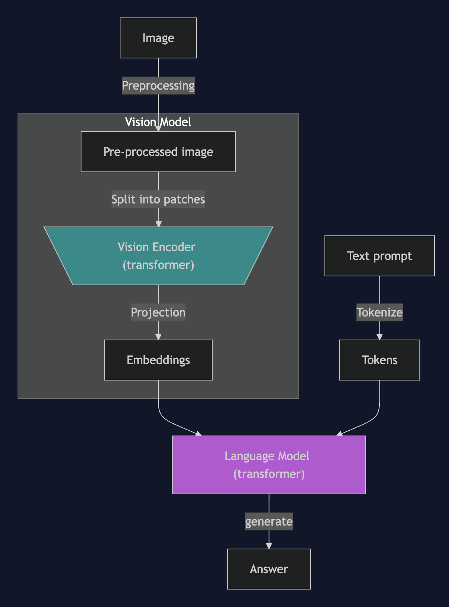
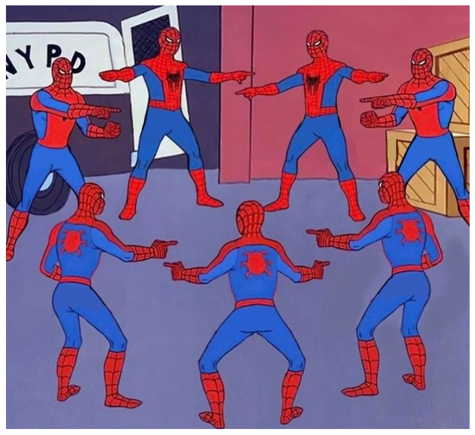
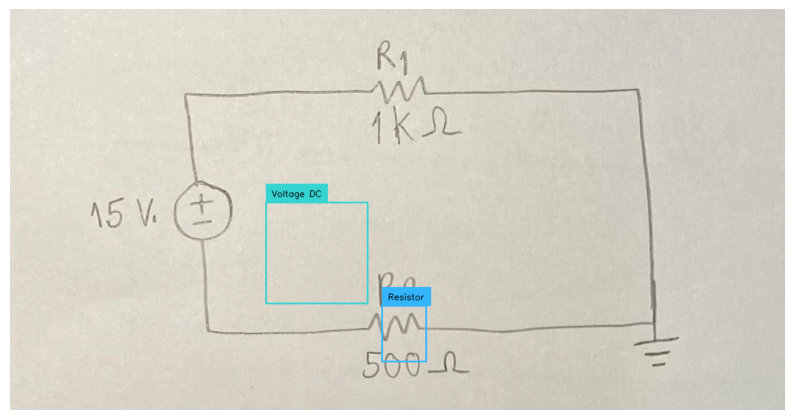

An overview of everything leading up to the current state of Vision-Language Models, including their architecture, training, and applications. This tutorial was conducted at the ACM India Summer School 2025.
🦥 Unsloth: Will patch your computer to enable 2x faster free finetuning.
🦥 Unsloth Zoo will now patch everything to make training faster!
Section 1: The “Language” in VLMs - Words, Meaning, and Sequences
How Can Computers Understand Language?
They need to: 1. Convert words into a numerical format that models can process. 2. Capture the relationships between words in a sequence. 3. Process sentences of different lengths.
Background and Evolution
1. Word Embeddings
A breakthrough was learning dense vector representations (embeddings) for words, where similar words have similar vector representations in a high-dimensional space. This captured semantic relationships (e.g., “king” - “man” + “woman” ≈ “queen”).

Word Embeddings
2. RNNs and LSTMs
Recurrent Neural Networks (RNNs) were designed to process sequences by maintaining a “memory” (hidden state) of where and what they’ve seen so far.
Standard RNNs struggled to remember information from many steps ago in long sentences (the “vanishing gradient” problem).
LSTMs introduced a memory cell with “gates” that could learn to retain or forget information over longer periods, making them much better at handling long-range dependencies in text.
3. Seq2Seq
Translating a sentence from one language to another (Sequence-to-Sequence or Seq2Seq). Early approaches used an RNN (the “encoder”) to read the input sentence and condense its entire meaning into a single, fixed-size vector. Another RNN (the “decoder”) would then generate the translation from this one summary vector.
Squeezing all the information from a long, complex sentence into one small vector was a major bottleneck.
4. Attention!
Instead of forcing the decoder to rely on a single summary vector, at each step of generating an output word, the decoder could “look back” at the entire input sentence and decide which input words were most relevant for predicting the current output word. It would then use a weighted combination of these relevant input word representations.
This was a game-changer! It allowed models to handle much longer sentences more effectively and significantly improved performance on tasks like machine translation.
5. The Transformer: “Attention Is All You Need”
If attention is so good at identifying relevant context, can we build a powerful sequence model using only attention, without the sequential processing of RNNs/LSTMs?
Self-Attention: Allows every word in a sentence to directly look at and weigh the importance of every other word in the same sentence.
Multi-Head Attention: Performs several self-attention operations in parallel, allowing the model to focus on different types of relationships or “representation subspaces” simultaneously. One head could identify who did something, while another focuses on when it happened
Positional Encodings: To make up for the lack of RNNs (which naturally handles order), Transformers add information about the position of words in the sequence directly to their embeddings.
Parallel Processing: Because it didn’t rely on step-by-step recurrent processing, the Transformer could process all words in a sequence simultaneously. (faster to train on GPUs/TPUs!).

Transformer Architecture
The Transformer revolutionized NLP and enabled the development of extremely large and powerful language models (like BERT, GPT) and its a foundational piece for many of the Vision-Language Models we’ll be exploring.
Hands-on: Transformers for Text - Tokenization & Generation
Let’s quickly see how Transformers handle text. We’ll: - Tokenize a sentence - Do a tiny text generation with a small pre-trained model.
Note: The first time you run the code below, it will download a model and tokenizer from Hugging Face. This is normal.
Code
# Load a small tokenizer & model (GPT-2)nlp_model_name ="openai-community/gpt2"tokenizer_nlp = AutoTokenizer.from_pretrained(nlp_model_name)text_generator = pipeline("text-generation", model=nlp_model_name, tokenizer=tokenizer_nlp, max_new_tokens=10)# Tokenizationmy_sentence ="ACM Summer School is Cool!"#@param {type:"string"}print(f"Original: '{my_sentence}'")encoded_ids = tokenizer_nlp.encode(my_sentence)print(f"Token IDs: {encoded_ids}")# Convert IDs to their string representations (tokens)tokens = tokenizer_nlp.convert_ids_to_tokens(encoded_ids)print(f"Tokens: {tokens}")decoded_sentence = tokenizer_nlp.decode(encoded_ids)print(f"Decoded: '{decoded_sentence}'")# Text Generationprompt ="The depth of Mariana Trench"#@param {type:"string"}generated_output = text_generator(prompt)print(f"\nPrompt: '{prompt}...'")print(f"Generated: '{generated_output[0]['generated_text']}'")
Device set to use cuda:0
Original: 'ACM Summer School is Cool!'
Token IDs: [2246, 44, 10216, 3961, 318, 15226, 0]
Tokens: ['AC', 'M', 'ĠSummer', 'ĠSchool', 'Ġis', 'ĠCool', '!']
Decoded: 'ACM Summer School is Cool!'
Prompt: 'The depth of Mariana Trench...'
Generated: 'The depth of Mariana Trenching River near Seattle:
Sixty or'
Section 2: The “Vision” in VLMs - From Pixels to Understanding
How Can Computers Understand Images?
Just like with language, for a machine to “understand” an image, it needs to extract meaningful information (features) from the raw pixel data. The better the features, the better the model
Evolution of Image Understanding
Early Days
Vision systems often relied on hand-crafted features. Researchers designed algorithms to find edges, corners, textures (e.g., SIFT, HOG). These required significant domain expertise.
CNNs
Convolutional Neural Networks (CNNs) revolutionized the field by learning features directly from image data. This led to massive performance gains on tasks like image classification.
CNNs are effective for images due to their built-in assumptions (inductive biases) about visual data: - Locality: The idea that pixels close to each other are related (handled by small convolution kernels). - Translation Equivariance and Invariance: An object’s identity doesn’t change if it shifts position (achieved by weight sharing in convolutions and pooling). - Hierarchical Feature Learning: They naturally learn simple features (edges) in early layers and combine them into complex features (object parts, objects) in deeper layers.
These biases make CNNs data-efficient, as they don’t need to learn these fundamental properties from scratch.
ResNet
As networks got deeper, training became very difficult due to the vanishing gradient problem (error signals weakening as they propagate back through many layers).
ResNet introduced a brilliant solution: Instead of learning a direct mapping \(H(x)\) from an input \(x\), a ResNet block learns a residual function \(F(x) = H(x) - x\). The output is then \(y = F(x) + x\).
ResNet Architecture
This \(+x\) identity shortcut creates a direct path for gradients to flow backward.
Even if the gradient through \(\left(\frac{dL}{dy} \cdot \frac{dF(x)}{dx} \right)\) part becomes very small, the \(\frac{dL}{dy}\) ensures that earlier layers still receive a substantial gradient signal.
The Vision Transformer (ViT)
Treat an image as a sequence of patches, similar to how text is a sequence of words.
Flatten each patch and linearly project it into a vector (patch embedding).
Add learnable positional embeddings to these patch embeddings to retain spatial information (since Transformers don’t inherently know about order).
[CLASS] Token: Similar to BERT, prepend a special learnable “[CLASS]” token. The corresponding output from the Transformer is used for classification.

ViT Preprocessing
Feed this sequence of patch embeddings (plus the [CLASS] token) to a standard Transformer encoder (Multi-Head Self-Attention + MLP blocks).

ViT Architecture
Unlike CNNs, ViTs have weaker built-in assumptions about images: - Self-attention allows any patch to interact with any other patch from the start, not strictly enforcing local processing initially. - They must learn spatial relationships and invariance from data, heavily relying on positional embeddings. - Because ViTs have fewer image-specific inductive biases, they do not generalize well when trained on insufficient amounts of data.
Hands-on: Image Classification with a Pre-trained Vision Transformer (ViT)
Note: Running the next cell will download the ViT model and its preprocessor from Hugging Face if you haven’t run it before. You might see download progress bars.
Code
# Set up the image classification pipelinevit_model_name ="google/vit-base-patch16-224"image_classifier = pipeline("image-classification", model=vit_model_name)# Classify an imageimage_url_vit ="https://imgflip.com/s/meme/Smiling-Cat.jpg"#@param {type:"string"} # Example: Cat# Display the image_ = display_image(image_url_vit)# Get predictionspredictions = image_classifier(image_url_vit)print("\nPredictions:")for i, pred inenumerate(predictions):print(f"{i+1}. Label: {pred['label']}, Score: {pred['score']:.4f}")
Fast image processor class <class 'transformers.models.vit.image_processing_vit_fast.ViTImageProcessorFast'> is available for this model. Using slow image processor class. To use the fast image processor class set `use_fast=True`.
Device set to use cuda:0
Enabling models to learn from vast unlabeled image datasets.
Create a “pretext task” where the model learns to predict some property of the data from other parts of the data, without human labels.
Contrastive Learning: It “pulls” representations of similar images (positive pairs: augmented views of an image) together and “pushes” representations of dissimilar images (negative pairs) apart.
SSL helps ViTs and other architectures learn robust visual representations, often leading to better performance when fine-tuned on downstream tasks with limited labeled data.
Section 3: Fusing Vision and Language - The Dawn of VLMs (CLIP)
Connecting Pixels and Words
So far, we’ve looked at models that understand images (like ResNet, ViT) and models that understand text (like Transformers). The next big step is to create models that can understand both and, more importantly, understand the relationship between them.
The CLIP Revolution
Instead of traditional supervised learning on manually labeled datasets (e.g., ImageNet categories), CLIP learns from the vast amount of (image, text) pairs available on the internet.
Given a batch of images and a batch of text snippets, predict which image goes with which text.
Contrastive Pre-training:
CLIP Architecture
Encoders: - An Image Encoder (e.g., a ResNet or a Vision Transformer) to get image features. - A Text Encoder (e.g., a Transformer) to get text features. - Joint Embedding Space: Both encoders project their outputs into a shared multi-modal embedding space.
Contrastive Loss:
For a given batch of \(N\) (image, text) pairs, the model calculates the cosine similarity between all possible image embeddings and text embeddings.
The training objective is to maximize the similarity for the \(N\) correct (image, text) pairs and minimize the similarity for the \(N \times N - N\) incorrect pairs. This is done using a symmetric cross-entropy loss over the similarity scores.
where \(\phi(v_i, t_j) = \tfrac{v_i}{\| v_i \|_2} \cdot \tfrac{t_j}{\| t_j \|_2}\) computes the cosine similarity between the image representation (\(v_i\)) and text representation (\(t_i\)) and \(\tau\) is the temperature parameter (that helps control the sharpness of the softmax distribution).
Hands-on: Zero-Shot Image Classification with CLIP
Let’s use a pre-trained CLIP model from Hugging Face. We’ll first explore its components and then use it for zero-shot image classification.
Code
# Load a pre-trained CLIP model and its processorclip_model_name ="openai/clip-vit-base-patch32"model_clip = CLIPModel.from_pretrained(clip_model_name)processor_clip = CLIPProcessor.from_pretrained(clip_model_name)print(f"CLIP model and processor ('{clip_model_name}') loaded successfully.")
Using a slow image processor as `use_fast` is unset and a slow processor was saved with this model. `use_fast=True` will be the default behavior in v4.52, even if the model was saved with a slow processor. This will result in minor differences in outputs. You'll still be able to use a slow processor with `use_fast=False`.
CLIP model and processor ('openai/clip-vit-base-patch32') loaded successfully.
image_url_clip ="https://storage.googleapis.com/sfr-vision-language-research/BLIP/demo.jpg"#@param {type:"string"}# Candidate text labels for classificationtext_labels = ["a photo of a cat","a photo of a dog","a photo of a person on a beach","a drawing of a car","a landscape with mountains"]# Display the imageprint(f"Classifying image from: {image_url_clip}")pil_image_clip = display_image(image_url_clip)# Preprocess the image and text# The processor handles tokenization for text and image transformations for the vision part.inputs_clip = processor_clip( text=text_labels, images=pil_image_clip, return_tensors="pt", # PyTorch tensors padding=True# ensures all text inputs are padded to the same length)# Perform inference to get embeddings and then logitswith torch.no_grad(): outputs_clip = model_clip(**inputs_clip)# The logits_per_image gives the cosine similarities between the image embedding and each text embedding, scaled by the learned temperature. logits_per_image = outputs_clip.logits_per_image# Get probabilities by applying softmax to the logitsprobs = logits_per_image.softmax(dim=1) # Softmax over the text labelsprint("\n--- CLIP Zero-Shot Classification Results ---")# Print probabilities for each labelfor i, label inenumerate(text_labels):print(f"Label: '{label}', Probability: {probs[0, i].item():.4f}")# Find the label with the highest probabilitybest_label_idx = probs.argmax(-1).item()print(f"\nBest matching label: '{text_labels[best_label_idx]}' with probability {probs[0, best_label_idx].item():.4f}")
--- CLIP Zero-Shot Classification Results ---
Label: 'a photo of a cat', Probability: 0.0050
Label: 'a photo of a dog', Probability: 0.3512
Label: 'a photo of a person on a beach', Probability: 0.6437
Label: 'a drawing of a car', Probability: 0.0000
Label: 'a landscape with mountains', Probability: 0.0001
Best matching label: 'a photo of a person on a beach' with probability 0.6437
Code
image_url_clip ="https://www.shutterstock.com/image-photo/wicker-basket-oranges-apples-on-600nw-1778587703.jpg"#@param {type:"string"}# text labels for classificationtext_labels = ["basket with 2 oranges and 3 apples","basket with 3 oranges and 2 apples"]print(f"Classifying image from: {image_url_clip}")pil_image_clip = display_image(image_url_clip)# The processor handles tokenization for text and image transformations for the vision part.inputs_clip = processor_clip( text=text_labels, images=pil_image_clip, return_tensors="pt", # PyTorch tensors padding=True# ensures all text inputs are padded to the same length)# Perform inference to get embeddings and then logitswith torch.no_grad(): outputs_clip = model_clip(**inputs_clip)# The logits_per_image gives the cosine similarities between the image embedding and each text embedding, scaled by the learned temperature. logits_per_image = outputs_clip.logits_per_image# Get probabilities by applying softmax to the logitsprobs = logits_per_image.softmax(dim=1) # Softmax over the text labelsprint("\n--- CLIP Zero-Shot Classification Results ---")# Print probabilities for each labelfor i, label inenumerate(text_labels):print(f"Label: '{label}', Probability: {probs[0, i].item():.4f}")# Find the label with the highest probabilitybest_label_idx = probs.argmax(-1).item()print(f"\nBest matching label: '{text_labels[best_label_idx]}' with probability {probs[0, best_label_idx].item():.4f}")
--- CLIP Zero-Shot Classification Results ---
Label: 'basket with 2 oranges and 3 apples', Probability: 0.4853
Label: 'basket with 3 oranges and 2 apples', Probability: 0.5147
Best matching label: 'basket with 3 oranges and 2 apples' with probability 0.5147
SPARC: Learning Language Grouped Vision Embeddings
This allows for better localization!

Section 4: The Rise of Powerful End-to-End VLMs
4.1 Understanding How VLMs Fuse Vision and Language

Fusion of Vision and Language
Early Fusion
Combine the visual and textual inputs (or their low-level embeddings) at an early stage. This combined representation is then fed through a single, shared encoder (often a Transformer) that processes both modalities jointly.
Allows for rich, deep interaction between vision and language information from the very first layers.
Can be computationally intensive as the shared encoder processes a longer combined sequence. Less modularity compared to separate encoders.
Hybrid Fusion / Cross-Attention
Image and text are initially processed by separate “uni-modal” encoder streams.
Then, specialized cross-attention layers are introduced where information from one modality can attend to the other.
Offers a good balance and allows modalities to develop their own initial representations but enables fine-grained interaction where needed.
Can still be complex to design and train effectively.
Late Fusion
Process the image and text through entirely separate encoders. The resulting high-level embeddings are then combined at the very end.
Computationally efficient for tasks like retrieval, as image and text features can be pre-computed.
The model can’t perform fine-grained reasoning that requires looking at specific parts of the image in conjunction with specific words early in the processing.
This technique adapts instruction tuning (popular in LLMs) to the multimodal domain. The core challenge is obtaining high-quality instruction-following data for vision and language. LLaVA demonstrated an innovative method to generate multimodal language-image instruction-following data. - Visual content from images (e.g., captions, object bounding boxes with labels) was converted into a textual format.
This textual representation was then fed to the language-only GPT-4 along with carefully designed prompts asking it to generate various instruction-response pairs (e.g., conversations about the image, detailed descriptions, or complex reasoning questions and answers based on the textual description of the image).
This dataset of (original image, generated instruction, generated response) triplets was then used to fine-tune a Large Multimodal Model (LLaVA itself, which combines a vision encoder with an LLM like Vicuna). This process teaches the LMM to follow human-like instructions in a visual context.
Standard VLM architecutre diagram

Standard VLM Architecture
Qwen2.5-VL
The Qwen series represents powerful, open-source LMMs, and Qwen2.5-VL is its latest flagship vision-language model, demonstrating significant advancements.
For our tutorial, we’ll be demonstrating its zero-shot capabilities and then fine-tuning it for specific tasks. For efficient use in Colab, we’ll use quantized version via Unsloth.
4.4 Zero-Shot with Qwen2.5-VL
Note: Running the cell below will download the Qwen2.5-VL model and its tokenizer. This can take a few minutes. Unsloth handles the complexities of 4-bit quantization for us.
Code
# Specify the Unsloth Qwen2.5-VL modelqwen_model_name_unsloth ="unsloth/Qwen2.5-VL-3B-Instruct-bnb-4bit"print(f"Loading Qwen2.5-VL model with Unsloth: {qwen_model_name_unsloth}.")# Load model and tokenizer using Unslothmodel_qwen, tokenizer_qwen = FastVisionModel.from_pretrained( model_name=qwen_model_name_unsloth, load_in_4bit=True, use_gradient_checkpointing="unsloth",)print("Qwen2.5-VL model and tokenizer loaded successfully with Unsloth.")
Loading Qwen2.5-VL model with Unsloth: unsloth/Qwen2.5-VL-3B-Instruct-bnb-4bit.
==((====))== Unsloth 2025.5.9: Fast Qwen2_5_Vl patching. Transformers: 4.51.3.
\\ /| Tesla T4. Num GPUs = 1. Max memory: 14.741 GB. Platform: Linux.
O^O/ \_/ \ Torch: 2.6.0+cu124. CUDA: 7.5. CUDA Toolkit: 12.4. Triton: 3.2.0
\ / Bfloat16 = FALSE. FA [Xformers = 0.0.29.post3. FA2 = False]
"-____-" Free license: http://github.com/unslothai/unsloth
Unsloth: Fast downloading is enabled - ignore downloading bars which are red colored!
Using a slow image processor as `use_fast` is unset and a slow processor was saved with this model. `use_fast=True` will be the default behavior in v4.52, even if the model was saved with a slow processor. This will result in minor differences in outputs. You'll still be able to use a slow processor with `use_fast=False`.
Qwen2.5-VL model and tokenizer loaded successfully with Unsloth.
Code
def run_inference(image, instruction, model, tokenizer): FastVisionModel.for_inference(model) # Enable for inference! messages = [ {"role": "user", "content": [ {"type": "image"}, {"type": "text", "text": instruction} ]} ] input_text = tokenizer.apply_chat_template(messages, add_generation_prompt =True) inputs = tokenizer( image, input_text, add_special_tokens =False, return_tensors ="pt", ).to("cuda")# Capture the output tokens output_tokens = model.generate(**inputs, max_new_tokens=512, use_cache=True, temperature=1.5, min_p=0.1 )# Decode the tokens to get the text output output_text = tokenizer.decode(output_tokens[0], skip_special_tokens=True)# Remove the prompt part prompt_length =len(tokenizer.decode(inputs.input_ids[0], skip_special_tokens=True)) generated_text = output_text[prompt_length:]return generated_text
Caption: The image captures a heartwarming moment between a person and their dog on a sandy beach during what appears to be sunset, with warm, golden light illuminating the scene.
A young woman sits on the sand with one knee propped up, facing a yellow Labrador Retriever that is kneeling down beside her. The woman, who has long hair that is illuminated by the sunlight, is smiling and holding out her hand towards the dog's paw. The dog reciprocates the gesture, reaching up towards her hand.
The background features the expansive, gently rolling ocean, with waves softly lapping at the shore behind them. The sky is clear with a pale gradient, transitioning from light blue near the horizon to a warm orange hue, indicative of the setting sun.
Their proximity creates a strong sense of companionship and affection, capturing a serene and joyful moment between humans and animals alike.
Answer: The image you provided is from the game "Cyberpunk 2077."
Code
# Task 3: A slightly more complex query (can involve reasoning or grounding)complex_image_url ="https://i.imgflip.com/5auep0.png?a485784"#@param {type:"string"}complex_image = display_image(complex_image_url)complex_query_qwen ="How many spidermen are there in this image?"#@param {type:"string"}response_complex_qwen = run_inference(complex_image, complex_query_qwen, model_qwen, tokenizer_qwen)print(f"\nAnswer: {response_complex_qwen}")

Answer: There are seven Spider-Man characters in the image.
zero_shot_prompt = unsloth_test_dataset[0]['messages'][0]['content'][0]['text']# Take the first image from the designated test/sample splittest_image = unsloth_test_dataset[0]['messages'][0]['content'][1]['image']display_image(test_image)test_out = run_inference(test_image, zero_shot_prompt, model_qwen, tokenizer_qwen)print("\nZero-Shot Generated JSON Output:")print(test_out)
# Add LoRA adapters for parameter-efficient finetuningmodel_qwen = FastVisionModel.get_peft_model( model_qwen, finetune_vision_layers=True, finetune_language_layers=True, finetune_attention_modules=True, finetune_mlp_modules=True, r=8, # LoRA rank lora_alpha=16, # Alpha for scaling LoRA weights lora_dropout=0.05, # Dropout probability for LoRA layers bias="none", # Bias type for LoRA. "none" is common. random_state=3407, # For reproducibility use_rslora=False, # Rank Stabilized LoRA loftq_config=None, # LoftQ configuration)# Enable training mode for the PEFT modelFastVisionModel.for_training(model_qwen)# This collator handles the specifics of padding and preparing batches for vision modelsdata_collator = UnslothVisionDataCollator(model_qwen, tokenizer_qwen)# Define Training Arguments (SFTConfig)training_args = SFTConfig( output_dir="qwen_circuit_finetune_outputs", # Directory to save checkpoints and logs per_device_train_batch_size=4, # Adjust based on your GPU VRAM. Start small. gradient_accumulation_steps=1, # Effective batch size = batch_size * accumulation_steps warmup_steps=5, # Number of steps for learning rate warmup num_train_epochs=5, # Number of epochs. learning_rate=2e-4, # Learning rate logging_steps=5, # Log training progress every X steps optim="adamw_8bit", # Optimizer. adamw_8bit is memory efficient. weight_decay=0.01, lr_scheduler_type="linear", # Learning rate scheduler seed=3407, # For reproducibility# Mixed precision training fp16=not torch.cuda.is_bf16_supported(), # Use fp16 if bf16 is not supported bf16=torch.cuda.is_bf16_supported(), # Use bf16 if supported (newer GPUs)# Crucial for Unsloth vision finetuning with "messages" format: remove_unused_columns=False, # Important for custom datasets dataset_text_field="", # Unsloth handles this internally when "messages" are present dataset_kwargs={"skip_prepare_dataset": True}, # Skip Hugging Face's automatic dataset prep dataset_num_proc=2, # Number of processes for dataset mapping (adjust based on CPU) max_seq_length=1024, # Max sequence length (prompt + completion). Adjust if needed.# Reporting report_to="none", # Can be "wandb", "tensorboard", etc.)# Initialize the SFTTrainertrainer = SFTTrainer( model=model_qwen, # The PEFT-enabled model tokenizer=tokenizer_qwen, train_dataset=unsloth_train_dataset, # Your prepared dataset data_collator=data_collator, # The Unsloth vision data collator args=training_args,)# Start trainingtrainer_stats = trainer.train()print(f"Training statistics: {trainer_stats}")# Save the fine-tuned LoRA adapterslora_output_dir ="qwen_circuit_lora_adapters"model_qwen.save_pretrained(lora_output_dir)tokenizer_qwen.save_pretrained(lora_output_dir) # Save tokenizer with adapters# You can also push to Hub if you want:# model_qwen_peft.push_to_hub("your_username/your_model_name", token="YOUR_HF_TOKEN")# tokenizer_qwen.push_to_hub("your_username/your_model_name", token="YOUR_HF_TOKEN")del trainerdel model_qwengc.collect()torch.cuda.empty_cache()gc.collect()
Unsloth: Model does not have a default image size - using 512
==((====))== Unsloth - 2x faster free finetuning | Num GPUs used = 1
\\ /| Num examples = 92 | Num Epochs = 5 | Total steps = 115
O^O/ \_/ \ Batch size per device = 4 | Gradient accumulation steps = 1
\ / Data Parallel GPUs = 1 | Total batch size (4 x 1 x 1) = 4
"-____-" Trainable parameters = 20,542,464/3,000,000,000 (0.68% trained)
`use_cache=True` is incompatible with gradient checkpointing. Setting `use_cache=False`...
[115/115 06:58, Epoch 5/5]
Step
Training Loss
5
2.160700
10
1.518000
15
0.983100
20
0.648300
25
0.531300
30
0.515100
35
0.529100
40
0.493600
45
0.505000
50
0.504900
55
0.473400
60
0.459400
65
0.483600
70
0.473200
75
0.452500
80
0.468100
85
0.444300
90
0.429100
95
0.441000
100
0.432600
105
0.435300
110
0.433500
115
0.412500
Unsloth: Will smartly offload gradients to save VRAM!
Training statistics: TrainOutput(global_step=115, training_loss=0.6185914474984874, metrics={'train_runtime': 470.0797, 'train_samples_per_second': 0.979, 'train_steps_per_second': 0.245, 'total_flos': 4685213108502528.0, 'train_loss': 0.6185914474984874})
# Convert the output of your parse_bbox function to sv.Detectionsft_detections = parse_parsed_json_to_sv_detections( detected_objects_info_ft, dataset_class_names)_ = display_image(annotate_image(test_image, ft_detections, dataset_class_names))

Code
del model_qwen_testdel tokenizer_qwen_testgc.collect()torch.cuda.empty_cache()gc.collect()
84375
Section 6: Fine-tuning VLMs - OCR Exercise
Code
# Specify the Unsloth Qwen2.5-VL modelqwen_model_name_unsloth ="unsloth/Qwen2.5-VL-3B-Instruct-bnb-4bit"# Load model and tokenizer using Unslothmodel, tokenizer = FastVisionModel.from_pretrained( model_name=qwen_model_name_unsloth, load_in_4bit=True, use_gradient_checkpointing="unsloth",)
==((====))== Unsloth 2025.5.9: Fast Qwen2_5_Vl patching. Transformers: 4.51.3.
\\ /| Tesla T4. Num GPUs = 1. Max memory: 14.741 GB. Platform: Linux.
O^O/ \_/ \ Torch: 2.6.0+cu124. CUDA: 7.5. CUDA Toolkit: 12.4. Triton: 3.2.0
\ / Bfloat16 = FALSE. FA [Xformers = 0.0.29.post3. FA2 = False]
"-____-" Free license: http://github.com/unslothai/unsloth
Unsloth: Fast downloading is enabled - ignore downloading bars which are red colored!
We now add LoRA adapters for parameter efficient finetuning - this allows us to only efficiently train 1% of all parameters.
We can also finetune - ONLY the vision part of the model, or - ONLY the language part or - both vision and language part or - the attention or the MLP layers
Code
model = FastVisionModel.get_peft_model( model, finetune_vision_layers =True, # False if not finetuning vision layers finetune_language_layers =True, # False if not finetuning language layers finetune_attention_modules =True, # False if not finetuning attention layers finetune_mlp_modules =True, # False if not finetuning MLP layers r =16, # The larger, the higher the accuracy, but might overfit lora_alpha =16, # Recommended alpha == r at least lora_dropout =0, bias ="none", random_state =3407, use_rslora =False, # We support rank stabilized LoRA loftq_config =None, # And LoftQ# target_modules = "all-linear", # Optional now! Can specify a list if needed)
### Data Prep We’ll be using a sampled dataset of handwritten maths formulas. The goal is to convert these images into a computer readable form - ie in LaTeX form, so we can render it. This can be very useful for complex formulas.
You can access the dataset here. The full dataset is here.
Downloading...
From (original): https://drive.google.com/uc?id=1v2wjHkLigwzRiE1m2I8TOz3542YjW1qA
From (redirected): https://drive.google.com/uc?id=1v2wjHkLigwzRiE1m2I8TOz3542YjW1qA&confirm=t&uuid=4953cb9e-361f-4189-9d01-a0ba4337fffe
To: /content/latex_ocr.zip
100%|██████████| 362M/362M [00:01<00:00, 229MB/s]
The LaTeX representation for the given equation is:
\[ H' = \beta N \int d\lambda \left\{ \frac{1}{2\beta^{2}\lambda^{2}} \partial_{\lambda} \zeta^{t} \partial_{\lambda} \zeta + V(\lambda) \zeta^{t} \zeta \right\} \]<|im_end|>
$The LaTeX representation for the given equation is:
[ H’ = N d{ {} ^{t} {} + V() ^{t} } ]$
Code
image
### Train the model Now let’s use Huggingface TRL’s SFTTrainer! More docs here: TRL SFT docs.
Code
from unsloth import is_bf16_supportedfrom unsloth.trainer import UnslothVisionDataCollatorfrom trl import SFTTrainer, SFTConfigFastVisionModel.for_training(model) # Enable for training!trainer = SFTTrainer( model = model, tokenizer = tokenizer, data_collator = UnslothVisionDataCollator(model, tokenizer), # Must use! train_dataset = converted_dataset, args = SFTConfig( per_device_train_batch_size =2, gradient_accumulation_steps =4, warmup_steps =5, max_steps =30,# num_train_epochs = 3, # Set this instead of max_steps for full training runs learning_rate =2e-4, fp16 =not is_bf16_supported(), bf16 = is_bf16_supported(), logging_steps =1, optim ="adamw_8bit", weight_decay =0.01, lr_scheduler_type ="linear", seed =3407, output_dir ="outputs", report_to ="none", # For Weights and Biases# You MUST put the below items for vision finetuning: remove_unused_columns =False, dataset_text_field ="", dataset_kwargs = {"skip_prepare_dataset": True}, dataset_num_proc =4, max_seq_length =2048, ),)
Unsloth: Model does not have a default image size - using 512
Start the training process
Code
trainer_stats = trainer.train()
==((====))== Unsloth - 2x faster free finetuning | Num GPUs used = 1
\\ /| Num examples = 68,686 | Num Epochs = 1 | Total steps = 30
O^O/ \_/ \ Batch size per device = 2 | Gradient accumulation steps = 4
\ / Data Parallel GPUs = 1 | Total batch size (2 x 4 x 1) = 8
"-____-" Trainable parameters = 41,084,928/3,000,000,000 (1.37% trained)
[30/30 02:22, Epoch 0/1]
Step
Training Loss
1
1.788700
2
2.125300
3
2.286800
4
1.756200
5
1.824400
6
2.070200
7
2.026500
8
1.413500
9
1.119200
10
1.212600
11
1.106800
12
0.956800
13
0.616200
14
0.640500
15
0.595800
16
0.439300
17
0.288700
18
0.283800
19
0.167100
20
0.262900
21
0.226900
22
0.262200
23
0.190300
24
0.163400
25
0.216300
26
0.176900
27
0.122600
28
0.331800
29
0.125400
30
0.213900
### Inference Let’s run the model! You can change the instruction and input - leave the output blank!
We use min_p = 0.1 and temperature = 1.5. Read this Tweet for more information on why.
Section 7: The Expanding VLM Universe & Ethical Considerations
Beyond what we covered: - Video VLMs (Qwen2.5-VL supports video). - Multimodal Agents (models that can “act” based on visual input).
Ethical Considerations: - Bias in datasets and models (leading to unfair or stereotypical outputs). - Misinformation (deepfakes, generated content). - Job displacement. - Privacy (models trained on public/private data). - Responsible development and deployment.
Section 8: Conclusion & Your VLM Journey Ahead
Summary: “From Pixels & Words -> Transformers -> CLIP -> Powerful VLMs -> Fine-tuning for Specialization.”
You’ve now seen the core evolution, used a state-of-the-art VLM, and even fine-tuned it!
Where to go next: - Explore other models on Hugging Face. - Try fine-tuning on larger, more complex datasets. - Contribute to open-source VLM projects.